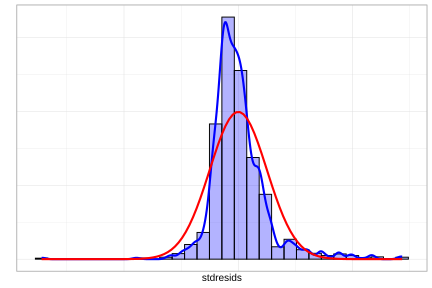
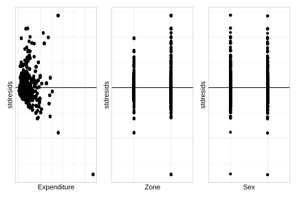
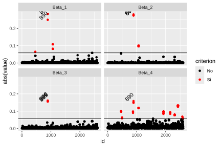
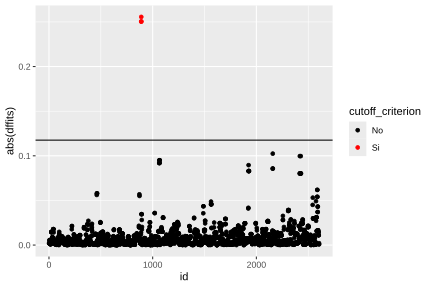

5.4 Diagnóstico del modelo
En el análisis de encuestas de hogares, la evaluación de un modelo estadístico constituye un aspecto importante que garantiza la validez de las inferencias. La literatura señala que un modelo adecuadamente especificado no depende únicamente de la selección de las covariables, sino también del cumplimiento de los supuestos que sustentan la consistencia y confiabilidad de los resultados (Tellez Piñerez & Lemus Polanía, 2015).
En el caso de los modelos de regresión lineal aplicados a encuestas complejas, resulta necesario examinar distintos aspectos relacionados con la calidad del ajuste y el comportamiento de los errores. Como se indicó anteriormente, entre ellos se encuentran la capacidad explicativa del modelo, la normalidad y homogeneidad de la varianza de los residuos, la independencia entre errores y la posible presencia de observaciones influyentes o valores atípicos que puedan afectar las estimaciones.
Estas verificaciones adquieren particular importancia en el contexto de diseños muestrales complejos, donde características como la estratificación, la conglomeración y el uso de factores de expansión pueden intensificar problemas asociados con la heterocedasticidad, la dependencia entre observaciones o la sensibilidad a valores extremos. Por esta razón, el diagnóstico del modelo no debe limitarse a los supuestos clásicos de la regresión, sino incorporar también las particularidades derivadas del diseño de la encuesta. La aplicación sistemática de estos procedimientos permite evaluar la solidez del modelo, fortalecer la confianza en las inferencias y asegurar que los resultados obtenidos sean representativos y útiles tanto para la investigación social aplicada como para el análisis de políticas públicas.
5.4.1 Coeficiente de determinación
Una de las medidas más utilizadas para evaluar el ajuste de un modelo de regresión es el coeficiente de determinación, denotado por \(R^{2}\) y conocido también como coeficiente de correlación múltiple. Este indicador cuantifica la proporción de la variabilidad de la variable dependiente que es explicada por el modelo. Sus valores oscilan entre cero y uno: cuanto más cercano se encuentre a la unidad, mayor será la capacidad explicativa del modelo; en contraste, valores próximos a cero indican un bajo nivel de explicación de la variabilidad observada. La magnitud del \(R^{2}\) no debe evaluarse en términos absolutos, sino considerando el fenómeno estudiado y el tipo de información disponible.
El coeficiente se calcula a partir de las sumas de cuadrados totales y de error, como \(R^{2} = 1 - \frac{SSE}{SST}\); en donde \(SST\) representa la suma de cuadrados totales y \(SSE\) la suma de cuadrados del error. En encuestas con diseños de muestreo complejos, esta medida debe ajustarse para incorporar la estructura del diseño y los pesos muestrales. El estimador ponderado del coeficiente de determinación se define como:
\[ \hat{R}^2 = 1 - \frac{\widehat{SSE}}{\widehat{SST}} \]
donde \(\widehat{SSE}\) es la suma ponderada de errores al cuadrado, calculada como \(\widehat{SSE} = \sum_{h} \sum_{i} \sum_{k} w_{hik} \,(y_{hik} - x_{hik}\hat{\boldsymbol{\beta}})^2\); mientras que \(\widehat{SST}\) representa la suma total ponderada de cuadrados, definida por \(\widehat{SST} = \sum_{h} \sum_{i} \sum_{k} w_{hik}\,(y_{hik} - \hat{\bar{y}})^2\).
Dado que \(R^{2}\) tiende a incrementarse conforme se incorporan más variables al modelo, se recomienda complementar su interpretación con el coeficiente de determinación ajustado (\(R_{adj}^{2}\)), el cual introduce una penalización en función del número de covariables incluidas y del tamaño muestral (Pfeffermann, 2011). Este coeficiente se define como \(\hat{R}^2_{adj} = 1 - \frac{(n-1)}{(n-p)}(1 - \hat{R}^2)\), donde \(n\) corresponde al número de observaciones, \(p\) representa el número de parámetros estimados y \(\hat{R}^{2}\) denota el coeficiente de determinación ponderado definido previamente.
De esta manera, el ajuste permite evaluar la capacidad explicativa del modelo controlando el efecto derivado de la incorporación de nuevas variables. Este ajuste facilita una comparación más equitativa entre modelos con distinto número de predictores y resulta particularmente útil en el análisis de encuestas, donde la complejidad del diseño y el uso de ponderaciones pueden influir notablemente en la magnitud del \(R^{2}\).
En R, el coeficiente de determinación \(R^{2}\) puede estimarse a partir de los modelos ajustados previamente. Para ello, se ajusta inicialmente un modelo nulo (incluyendo únicamente el intercepto), el cual permite calcular la suma total ponderada de cuadrados (\(\widehat{SST}\)).
null_model <- svyglm(Income ~ 1, design = survey_design)
s1 <- summary(fit_svy)
s0 <- summary(null_model)
wsst <- s0$dispersion[1]
wsse <- s1$dispersion[1]La estimación del coeficiente de determinación y su contraparte ajustada se obtiene a partir del siguiente cálculo:
n <- nrow(survey_design)
p <- 4
r2 <- 1 - wsse / wsst
r2_adj <- 1 - ((n - 1) / (n - p)) * (1 - r2)
r2## [1] 0.5138## [1] 0.51335.4.2 Residuales
En el diagnóstico de modelos, el análisis de los residuales es una de las herramientas más relevantes. Si el modelo está correctamente especificado, los residuales actúan como una aproximación de los errores no observados y permiten evaluar, de forma indirecta, si los supuestos del modelo se cumplen razonablemente en los datos. Su revisión sistemática permite identificar posibles desviaciones en la especificación, lo que ayuda a determinar si el ajuste es adecuado o si, por el contrario, es necesario reconsiderar la forma funcional del modelo o el método de estimación utilizado.
En encuestas con diseños de muestreo complejos, los residuales de Pearson constituyen una herramienta habitual para evaluar las discrepancias entre los valores observados y los valores esperados bajo el modelo ajustado. Siguiendo a Heeringa et al. (2017), estos se definen como:
\[ r_{k} = \frac{y_k - \mu_k}{\sqrt{\widehat{Var}(\mu_k)/w_k}}, \]
donde \(\hat{\mu}_{k} = \mathbf{x}_{k}^{\top}\hat{\boldsymbol{\beta}}\) representa el valor esperado de \(y_{k}\) bajo el modelo ajustado, \(w_{k}\) corresponde al peso muestral asociado a la unidad \(k\), y \(\widehat{Var}(\hat{\mu}_{k})\) denota la varianza estimada bajo la familia del modelo.
Los residuales de Pearson también se utilizan para evaluar aspectos clave del ajuste del modelo, en particular la normalidad y la homogeneidad de la varianza de los errores. De forma complementaria, el gráfico de residuos frente a valores ajustados constituye una herramienta diagnóstica especialmente informativa, ya que su inspección visual permite detectar posibles patrones sistemáticos que sugieran incumplimientos de los supuestos de independencia o heterocedasticidad.
El supuesto de normalidad de los errores también debe verificarse de manera explícita. Para ello, una herramienta estándar es el gráfico cuantil-cuantil (QQ-plot), el cual compara los cuantiles de los residuos observados con los cuantiles teóricos de una distribución normal con la misma media y varianza. Una alineación aproximada de los puntos sobre la recta de 45° indica que el supuesto de normalidad resulta razonable dentro del contexto del modelo.
A continuación, estos diagnósticos se aplican a los modelos previamente ajustados. Para ello, se utiliza el paquete svydiags (Valliant, 2024), desarrollado como extensión del paquete survey para el diagnóstico de modelos estimados bajo diseños muestrales complejos. Este paquete permite obtener los residuales estandarizados de manera directa, facilitando la evaluación de los supuestos del modelo en este tipo de contextos:
library(svydiags)
stdresids <- as.numeric(svystdres(fit_svy)$stdresids)
survey_design$variables <- survey_design$variables %>%
mutate(stdresids = stdresids)El análisis de normalidad puede complementarse con el histograma de los residuales estandarizados, presentado en la Figura 5.2. El histograma de los residuos estandarizados revela una falta de ajuste significativa respecto a la curva de distribución normal teórica (en rojo), lo cual corrobora una violación del supuesto de normalidad. La distribución de los residuos (representada en azul) muestra un pico mucho más agudo y estrecho que la curva normal, además de una asimetría positiva marcada con una cola extendida hacia la derecha. Esta discrepancia indica que el modelo no logra capturar la variabilidad real de los datos, lo que sugiere la necesidad de aplicar una transformación de la variable dependiente o emplear un modelo con una familia de distribución más flexible y robusta.
ggplot(
data = survey_design$variables,
aes(x = stdresids)
) +
geom_histogram(
aes(y = ..density..),
colour = "black",
fill = "blue",
alpha = 0.3
) +
geom_density(size = 1, colour = "blue") +
geom_function(fun = dnorm, colour = "red", size = 1) +
labs(y = "")
Figura 5.2: Histograma de residuales estandarizados con curva de densidad estimada y distribución normal teórica
La homocedasticidad de los errores (varianza constante), constituye uno de los supuestos centrales en los modelos de regresión. Su incumplimiento afecta la eficiencia de los estimadores del modelo. Dado que los residuos representan las discrepancias entre los valores observados y los valores ajustados por el modelo, su análisis en función de los valores predichos o de las covariables constituye una herramienta diagnóstica fundamental. Bajo un modelo adecuadamente especificado, se espera que los residuos se distribuyan de forma aleatoria alrededor de cero, sin patrones estructurados; en cambio, la aparición de formas sistemáticas (como estructuras en embudo o curvaturas) sugiere la presencia de heterocedasticidad (varianza no constante) o posibles relaciones funcionales no captadas por la especificación del modelo.
Para evaluar este supuesto, se recomienda analizar gráficamente los residuos en función de los valores estimados \(\hat{\mu}_{k}\) o de covariables específicas del modelo. La aparición de patrones sistemáticos en estos gráficos constituye evidencia de heterocedasticidad o de posibles problemas de especificación funcional. En particular, para evaluar la homocedasticidad respecto de las covariables incluidas en el modelo, se construyen gráficos de residuos frente a cada una de ellas y se combinan con patchwork (Pedersen, 2025).
library(patchwork)
g1 <- ggplot(
data = survey_design$variables,
aes(x = Expenditure, y = stdresids)
) +
geom_point() +
geom_hline(yintercept = 0)
g2 <- ggplot(
data = survey_design$variables,
aes(x = Zone, y = stdresids)
) +
geom_point() +
geom_hline(yintercept = 0)
g3 <- ggplot(
data = survey_design$variables,
aes(x = Sex, y = stdresids)
) +
geom_point() +
geom_hline(yintercept = 0)
(g1 | g2 | g3)
Figura 5.3: Gráficos de residuales estandarizados frente a cada covariable del modelo
La Figura 5.3 presenta los gráficos de dispersión de los residuos estandarizados frente a las covariables del modelo. En conjunto, estos resultados sugieren posibles limitaciones en la especificación funcional. En particular, para Expenditure se observa una ligera curvatura en la tendencia de los residuos, lo que podría indicar la presencia de una relación no lineal no completamente capturada por el modelo. Por su parte, en los gráficos asociados a Zone y Sex se aprecia una dispersión desigual de los residuos entre categorías, lo que sugiere diferencias en la variabilidad condicional o en el ajuste de la media entre grupos.
5.4.3 Observaciones influyentes
En el análisis diagnóstico, la identificación de observaciones influyentes es una técnica de especial importancia. Estas son unidades muestrales cuyo impacto sobre el ajuste del modelo resulta desproporcionado respecto al resto de la muestra. Conviene subrayar que una observación influyente no necesariamente corresponde a un valor atípico: mientras un atípico puede estar alejado del patrón general de los datos sin afectar sustancialmente el ajuste, una observación influyente puede alterar de manera significativa las estimaciones de los parámetros, incluso si no luce inusual.
La distancia de Cook mide el impacto que tendría la eliminación de la observación \(k\) sobre el ajuste global del modelo, al combinar simultáneamente la magnitud del residuo, la varianza estimada del modelo y su apalancamiento (leverage). En el contexto de encuestas con diseños muestrales complejos, la distancia de Cook se denota como \(c_k\) y su expresión incorpora explícitamente los pesos muestrales (Heeringa et al., 2017, p. 213). Para evaluar la magnitud de este estadístico, se utiliza una aproximación basada en su comparación con una distribución F, mediante la expresión
\[ \frac{(df-p+1)\,c_{k}}{df} \sim F_{(p,\,df-p)}, \]
donde \(p\) denota los parámetros del modelo y \(df\) representa los grados de libertad asociados al diseño muestral. En la práctica, se considera que una observación puede ser influyente si su distancia de Cook supera valores de referencia aproximados entre 2 y 3, según lo propuesto en la literatura (Heeringa et al., 2017).
En R, se evalúa la presencia de observaciones influyentes mediante la distancia de Cook, estimada con la función svyCooksD del paquete svydiags. Los resultados obtenidos se presentan en la Figura 5.4, en donde se observa que ninguna de las distancias de Cook supera el umbral de referencia de 3, por lo que, bajo este criterio, no se identifican observaciones con influencia significativa sobre el ajuste del modelo.

Figura 5.4: Distancia de Cook para cada observación de la muestra
## 1 2 3 4 5 6 7 8
## 0.0008667 0.0013961 0.0013979 0.0010179 0.0016359 0.0016423 0.0018452 0.0013093
## 9 10
## 0.0021197 0.0012425Otro estadístico que mide el grado de influencia de una observación es el DFBETA, denotado como \(D_f\text{Beta}_{(k)j}\), que mide el cambio que experimenta el coeficiente de regresión \(\hat{\beta}_{j}\) cuando la observación \(k\) es eliminada del proceso de estimación. En consecuencia, esta medida evalúa la influencia individual de cada observación sobre los parámetros del modelo, identificando aquellas unidades cuya presencia altera de manera importante las estimaciones obtenidas. Valores elevados de \(D_f\text{Beta}_{(k)j}\) indican que la observación ejerce una influencia considerable sobre el coeficiente correspondiente, lo que puede afectar la estabilidad e interpretación del modelo.
Segun Li & Valliant (2015), como criterio práctico de diagnóstico, una observación suele considerarse influyente sobre el coeficiente \(\hat{\beta}_{j}\) cuando
\[ \left|D_f\text{Beta}_{(k)j}\right| \geq \frac{z}{\sqrt{n_I\times DEFF}}, \]
donde \(z\) toma comúnmente valores de 2 o 3, \(n_I\) representa el número de UPMs seleccionadas en la muestra de la primera etapa y \(DEFF\) corresponde al efecto de diseño. A continuación, se evalúa la influencia de las observaciones sobre los coeficientes del modelo de ejemplo mediante la función svydfbetas. Los resultados correspondientes a las primeras diez observaciones se presentan en la Tabla 5.1.
d_dfbetas <- data.frame(t(svydfbetas(fit_svy)$Dfbetas))
colnames(d_dfbetas) <- paste0("Beta_", 1:4)
d_dfbetas %>%
slice(1:10L)| Beta_1 | Beta_2 | Beta_3 | Beta_4 |
|---|---|---|---|
| 0.000 | 0 | 0.001 | -0.003 |
| -0.001 | 0 | 0.001 | 0.002 |
| -0.001 | 0 | 0.001 | 0.002 |
| 0.000 | 0 | 0.001 | -0.003 |
| -0.001 | 0 | 0.001 | 0.002 |
| 0.003 | 0 | -0.003 | -0.008 |
| 0.003 | 0 | -0.003 | -0.008 |
| 0.000 | 0 | -0.003 | 0.008 |
| 0.003 | 0 | -0.003 | -0.008 |
| -0.001 | 0 | 0.001 | -0.003 |
Una vez obtenidos los valores de la medida DFBETA para cada observación y coeficiente del modelo, se calcula el correspondiente umbral de influencia a partir de los resultados generados por la función svydfbetas. Con base en este criterio, se construye una variable dicotómica que permite clasificar las observaciones según su nivel de influencia sobre las estimaciones del modelo. Los resultados de esta clasificación se presentan en la Tabla 5.2.
d_dfbetas$id <- 1:nrow(d_dfbetas)
d_dfbetas <- reshape2::melt(d_dfbetas, id.vars = "id")
cutoff <- svydfbetas(fit_svy)$cutoff
d_dfbetas <- d_dfbetas %>%
mutate(criterion = ifelse(abs(value) > cutoff, "Yes", "No"))
label_text <- d_dfbetas %>%
filter(criterion == "Yes") %>%
arrange(desc(abs(value))) %>%
slice(1:10L)
label_text| id | variable | value | criterion |
|---|---|---|---|
| 889 | Beta_1 | 0.284 | Yes |
| 891 | Beta_1 | 0.284 | Yes |
| 890 | Beta_2 | -0.280 | Yes |
| 889 | Beta_2 | -0.275 | Yes |
| 891 | Beta_2 | -0.275 | Yes |
| 890 | Beta_1 | 0.250 | Yes |
| 890 | Beta_3 | 0.161 | Yes |
| 890 | Beta_4 | 0.158 | Yes |
| 889 | Beta_3 | 0.156 | Yes |
| 891 | Beta_3 | 0.156 | Yes |
Los resultados muestran que varias observaciones superan el umbral establecido por el criterio \(D_f\text{Beta}_{(k)j}\), lo que indica que dichas unidades ejercen una influencia importante sobre la estimación de algunos coeficientes del modelo, lo que sugiere la presencia de unidades con alto impacto sobre la estabilidad del ajuste. La Figura 5.5 presenta la representación gráfica de los valores de \(D_f\)Beta junto con el umbral de referencia utilizado para identificar observaciones influyentes. En la figura, los puntos resaltados en rojo corresponden a las observaciones que exceden dicho umbral y que, por tanto, requieren una revisión más detallada dentro del proceso de diagnóstico del modelo.
ggplot(d_dfbetas, aes(y = abs(value), x = id)) +
geom_point(aes(col = criterion)) +
geom_text(
data = label_text,
angle = 45,
vjust = -1,
aes(label = id)
) +
geom_hline(aes(yintercept = cutoff)) +
facet_wrap(. ~ variable, nrow = 2) +
scale_color_manual(
values = c("Yes" = "red", "No" = "black")
)
Figura 5.5: Valores DfBetas por parámetro: observaciones influyentes señaladas en rojo
Por último, el estadístico DFFITS, denotado por \(D_f\text{Fits}_{(k)}\), mide la influencia que ejerce la observación \(k\) sobre los valores ajustados del modelo. En particular, este estadístico evalúa cuánto cambian las predicciones del modelo cuando una observación es eliminada del proceso de estimación. En consecuencia, valores elevados de \(D_f\text{Fits}_{(k)}\) indican observaciones con capacidad de alterar de manera importante el ajuste global del modelo y, por tanto, potencialmente influyentes en el proceso de inferencia. Segun Li & Valliant (2015), una observación se considera influyente si:
\[ |D_f\text{Fits}_{(k)}| \geq z\sqrt{\frac{p}{n\times DEFF}} \] donde \(z\) toma comúnmente valores de 2 o 3, mientras que \(n\) representa el tamaño muestral total de elementos incluidos en la encuesta. En el contexto de encuestas complejas, el uso de umbrales ajustados por efecto de diseño resulta especialmente relevante, ya que incorpora la pérdida de precisión derivada de la estratificación, la conglomeración y la utilización de pesos desiguales.
En R, el cálculo de este estadístico puede realizarse mediante la función svydffits del paquete svydiags, la cual obtiene las medidas de influencia considerando explícitamente la estructura del diseño muestral. Los resultados gráficos correspondientes se presentan en la Figura 5.6, en donde se confirma la existencia de algunas observaciones influyentes (señaladas en rojo).
d_dffits <- data.frame(
dffits = svydffits(fit_svy)$Dffits,
id = 1:length(svydffits(fit_svy)$Dffits)
)
cutoff <- svydffits(fit_svy)$cutoff
d_dffits <- d_dffits %>%
mutate(cutoff_criterion = ifelse(abs(dffits) > cutoff, "Yes", "No"))
ggplot(d_dffits, aes(y = abs(dffits), x = id)) +
geom_point(aes(col = cutoff_criterion)) +
geom_hline(yintercept = cutoff) +
scale_color_manual(
values = c("Yes" = "red", "No" = "black")
)
Figura 5.6: Valores DfFits: observaciones influyentes sobre el ajuste global señaladas en rojo